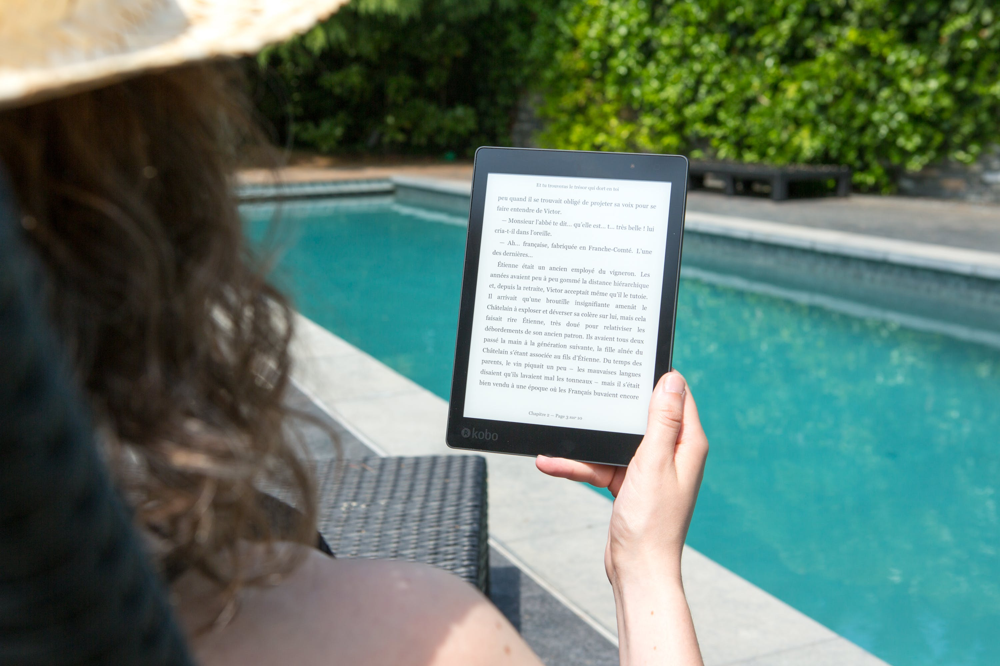

E-book is better
Ebooks redefine the reading experience by offering unparalleled convenience and accessibility.
With the ability to access literature on smartphones, iPads, or Kindles, readers enjoy the freedom to carry their entire library easily.
The lightweight of digital devices ensures that the weight of the book is not a concern for the reader.
Moreover, the affordability of ebooks makes literary indulgence accessible to all, with prices often being significantly lower than traditional printed books.
Instantaneous purchases and downloads mean that acquiring new titles is very simple, you can do it anytime and anywhere.
For individuals living in compact spaces or constantly on the move, ebooks are the best choice, allowing for efficient space management and effortless relocation.
International students like us, in particular, can travel with all our collections easily.
Furthermore, by choosing ebooks, readers contribute to environmental conservation by reducing paper consumption and minimizing their ecological footprint.